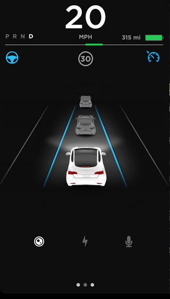
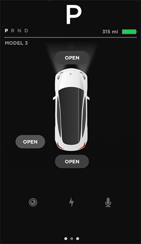
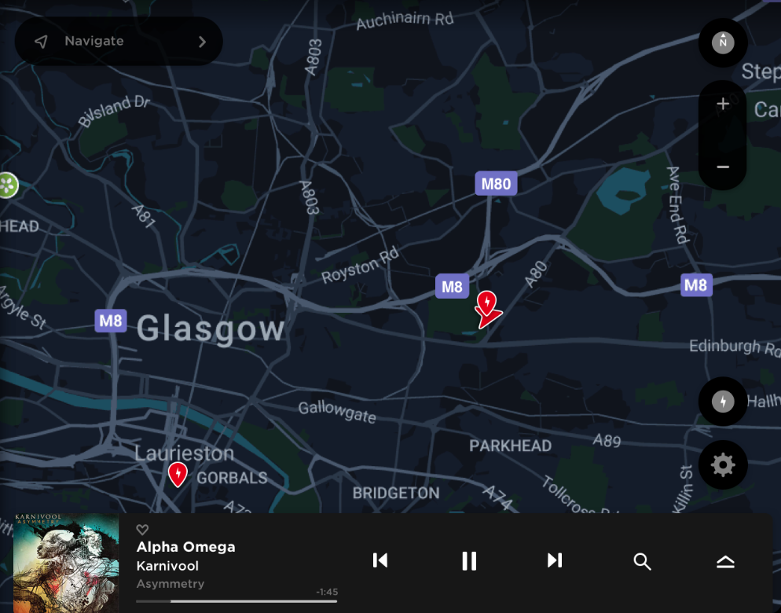

UI screenshots and demo taken from: https://projects.invisionapp.com/share/DPCUX2ETA#/screens/246644259
I had the opportunity to ride in a Tesla model 3 and played around with the dashboard interface. It is a interesting and new implementation of a cars interface. Tesla took away the traditional car dashboard which sits in front of the driver behind the steering wheel and put all that information along with the climate control and center console features into (or most of it) in a 15 inch tablet. At first when I heard the announcement that the dashboard was moving towards the center console to be combined with all the other components I was a bit apprehensive. But after using it I realized how much less cluttered the model 3 was without all the extra buttons. This made the experience less overwhelming and enjoyable.
Main Menu Bar (bottom)
Car status section (left)
 GPS and Music section (right)
Top status bar
At a glance the model 3 tablet interface looks exactly what a looks like. A tablet. Tablet like menu design at the bottom separated by a main and side window/section which shows the status of the car on the left and the main window which displays GPS and music on the right (but once a menu option is selected pop-up dialogue boxes will appear in the main windows). The last section is the top status bar at the top showing some information of the car and other information including 4g connectivity.
One of the main reasons why I enjoyed using the model 3’s interface was because the experience is very much like using a tablet, but you have extra features that control the car. It was intuitive and fairly easy to understand because of my previous experiences with mobile devices.
The bottom menu bar has almost no text and uses icons just like a mobile platform menu. It allows control over climate and seat control, music and many other things. Selecting one of the main options changes the UI on the main window. One of the main options is the Car option (car icon). This opens up options for lights (brightness), locks, driving, autopilot, locking mechanisms. A neat feature I liked is that you can unlock your car trunks (front and back) from the car status window. Like a gamified experience. It made me feel like we are truly living in a digital age while also making the experience fun. I could use the tablet to control all the features that require manual adjustment in most cars. The UI was somewhat straightforward and easy to pick up. Obviously not many will understand the UI right away and it will take some time to get used to it, but it’s just like learning how to use a smartphone or tablet and most people these days have used one or the other.
Back